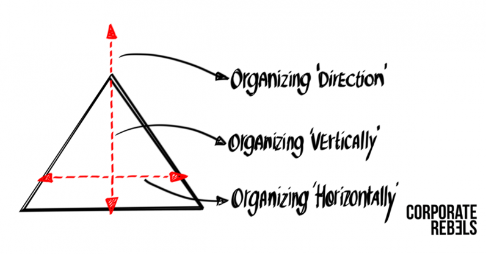
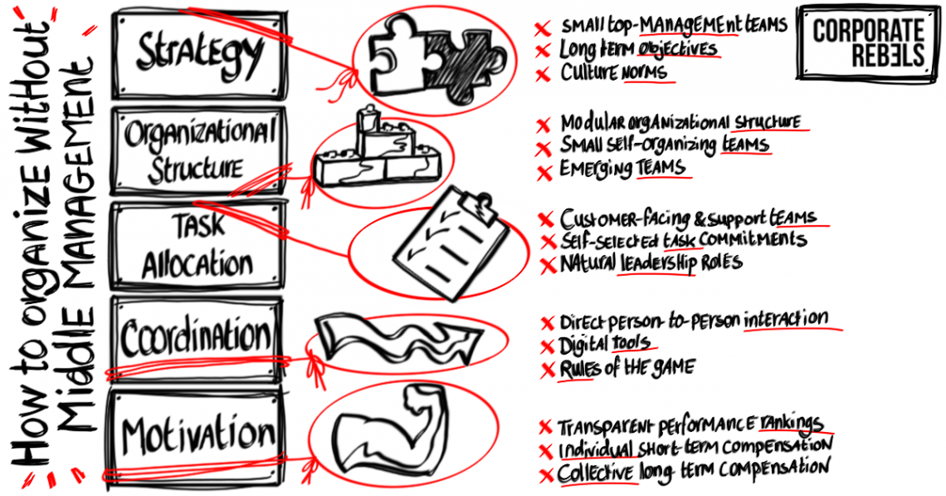

")
A The Corporate Rebels egy két srácból álló mini csapat, akik otthagyták nagyvállalati munkájukat azért, hogy felkeressék a világ leginspirálóbb munkahelyeit. A sok tapasztalatot – amit így a földgolyó legprogresszívabb vállalataitól első kézből szereztek meg – különféle fórumokon osztják meg a világgal.
A következő – hosszú lélegzetvételű – írásuk azt elemzi, hogy a vállalatokat hogyan lehet működtetni középvezetői réteg nélkül.
Nagyvállalat-szervezés középvezetés nélkül
2018 elején nagy fába vágtam a fejszémet, amikor a nagy népszerűségnek örvendő menedzsmentvilágban eltöltött két év után úgy döntöttem, hogy ismét belevetem magam a tanulásba. A VU (Vrije Universiteit) Amsterdam kutatóegyetem részidejű üzleti doktori képzésére iratkoztam be. Azóta azt kutatom, hogy a (több ezer alkalmazottat foglalkoztató) nagyvállalatok növekedése és fejlődése, valamint a vállalatszervezés hogyan képzelhető el középvezetés nélkül. Eljött az idő, hogy közkinccsé tegyük az általunk tanultakat.
Figyelmeztetés: Ez a cikk elég hosszúra sikerült, de ahogy Blaise Pascal, a nagy matematikus írta egy helyen; „Nincs időm arra, hogy rövid levelet írjak Önnek, így aztán hosszút írok.” Ezért elnézést kérek.)
A vizsgált jelenség
➔ A témánkkal foglalkozó tudományos szakirodalom elolvasása után két fontos megállapítást tettünk:
- A „középvezetés nélküli vállalatszervezés” témája már évek óta a kutatók érdeklődésének középpontjában van, és
- a jelenlegi tudományos vita csak korlátozott mértékben tud a gyakorlatban megvalósult példákra hivatkozni.
Nevezetesen:
- GitHub (a Microsoft tulajdonában lévő amerikai IT-vállalat, ~900 alkalmazott)
- Valve (Gabe Newell alapító tulajdonában lévő amerikai IT-vállalat, ~400 alkalmazott)
- Morning Star (Chris Rufer alapító tulajdonában lévő amerikai élelmiszeripari vállalat, ~600 alkalmazott)
- Zappos (az Amazon tulajdonában lévő amerikai online kiskereskedelmi vállalat, ~1500 alkalmazott)
Leggyakrabban ezt a négy vállalatot hozzák fel példaként, mint olyan cégeket, amelyek „teljes mértékben eltértek a formális hierarchikus struktúrától”, és „teljesen eltörölték a középvezetést”.
Az évek során különböző megnevezéseket használtak e cégekre:
- „nem hierarchikus szervezetek” (Non-hierarchical organizations) (Herbst, 1976)
- „főnök nélküli szervezetek” (Boss-less organizations) (Puranam et al., 2014)
- „önmenedzselő szervezetek” (Self-managing organizations) (Lee–Edmondson, 2015)
A tudomány jelenlegi álláspontja
➔ Számos ilyen típusú szervezetet felkerestünk, és a tudomány jelenlegi álláspontjával kapcsolatban két probléma is elég hamar szemet szúrt nekünk:
Az első a kisebbik probléma. Szerintünk a „középvezetés nélküli vállalati szervezetre” javasolt elnevezések egyáltalán nem jók. Ennek az az oka, hogy a tanulmányozott vállalatoknak továbbra is van felső vezetői csapata (vezérigazgató, alapító és/vagy tulajdonos), ami teljeskörű döntési jogkört élvez. Ez azt jelenti, hogy ezeknél a vállalatoknál bizony van hierarchia, vannak főnökök, ennélfogva nem nevezhetjük ezeket teljes mértékben önmenedzselő szervezeteknek.
Ez azt is jelenti, hogy a javasolt elnevezések nem ragadják meg az általunk megfigyelt jelenség lényegét, ezért egy új elnevezést javaslunk: „középvezető nélküli szervezetek” (middle managerless organization; rövidítve MMLO).
A második probléma már sokkal jelentősebb: a fent felsorolt vállalatok nemcsak kivétel nélkül amerikaiak, hanem ráadásul viszonylag kis (legfeljebb 1500 alkalmazottat foglalkoztató) cégek is. Márpedig az általában példaként felhozott fenti cégek kis mérete miatt sokan kétségbe vonják, hogy mondjuk a 10 000 főnél több alkalmazottat foglalkoztató nagyvállalatokat is lehetne-e MMLO-vá alakítani.
Emellett számos kutató arra is rámutatott, hogy mindegyik startup MMLO-ként indul, de idővel, ahogy növekednek, és felmerül a koordináció, ellenőrzés és kommunikáció javításának szükségessége, általában menedzseri hierarchiára térnek át (a középvezetői-menedzseri réteg megjelenésével). Emiatt sokan kétségbe vonják az MMLO nagyvállalatoknál történő megvalósíthatóságát.
Ezzel a második problémával szeretnék részletesen foglalkozni ebben a posztban.
Három inspiráló példa
➔ A szaktekintélyek alapvetően szkeptikus hozzáállása ellenére és a Bucket List nevű listánkon szereplő progresszív munkahelyek felkeresését követően biztosak vagyunk benne, hogy a nagyvállalatok szervezeti felépítéséből ki lehet iktatni a középvezetői szintet.
Tulajdonképpen erről a saját szemünkkel győződtünk meg. Három inspiráló példa is azt mutatja, hogy igenis meg lehet szervezni több ezer alkalmazott munkavégzését középvezetés nélkül is. Az esetpéldáink három kontinens (Amerika, Ázsia és Európa) három nagyvállalata, hogy a lehető legátfogóbb képet nyújthassuk. Ezek a következők:
A vállalatszervezés öt problémája
Még mielőtt rátérnénk arra, hogy hogyan néz ki a Gore, a Buurtzorg és a Haier középvezetés nélküli szervezeti felépítése, először azt kell tisztáznunk, hogy pontosan mit is értünk vállalatszervezés alatt.
Ehhez pedig olyan tudósok munkáit hívjuk segítségül, mint Lawrence és Lorsch, Mintzberg, Burton és Obel, Birkinshaw, Puranam, Lee és Edmondson. E kiváló tudósok kutatásai alapján amellett érvelünk, hogy bármilyen működő (két vagy több alkalmazottat foglalkoztató) vállalkozásnak három, egymással szorosan összefüggő problémát kell megoldania:
- stratégia (a vállalkozás stratégiai irányvonalának kijelölése)
- munkaelosztás (vertikális vállalatszervezés)
- erőfeszítések integrálása (horizontális vállalatszervezés)

Az utolsó két problémát további két-két alproblémára lehet felosztani: a „munkaelosztás” problémáját a „szervezeti felépítés” (organizational structure) és a „feladatkiosztás” (task allocation) alproblémákra, valamint az „erőfeszítések integrálásának” problémáját a „koordináció” és a „motiváció” alproblémákra.
Ez alapján a vállalatszervezés öt alapvető problémát vet fel, amiket valamennyi cégnek, jellegéből adódóan, meg kell oldania:
1. Stratégia
Ez a probléma a cég stratégia irányvonalának kijelölését és az azzal összefüggő célkitűzések meghatározását érinti. Ez hagyományosan a felső vezetői gárda feladata rövid távú (főként pénzügyi) célok kitűzése révén.
2. Szervezeti felépítés
Ez a probléma a felső vezetés által kitűzött célok feladat- és szerepkörökre történő felosztásával kapcsolatos. Ez hagyományosan egyfajta hierarchikus forma bevezetése (általában funkcionális szervezeti egységek felállítása) révén valósul meg.
3. Feladatok kiosztása
Ez az elvégzendő feladatok és szerepkörök munkavállalókhoz való hozzárendelésének problematikáját jelenti. Hagyományosan a középvezetés osztja a feladatokat és szerepköröket az alkalmazottakra.
4. Koordináció
Ez a probléma a munkavállalók számára a munkatársaikkal való közös munka összehangolásával kapcsolatos. Ezt hagyományosan a középvezetői szint biztosítja szabályok és pontosan meghatározott eljárások bevezetése révén az alkalmazottak irányítása és ellenőrzése céljából.
5. Motiváció
Ez a probléma a munkavállalók teljesítményének figyelemmel kísérését és a feladatok elvégzéséért jutalmak elosztását érinti. Hagyományosan a középvezetői szint kíséri figyelemmel az alkalmazottak teljesítményét, és dönt a jutalmak elosztásáról.
Ennek fényében a vállalatszervezés valójában ezen öt probléma megoldásának is tekinthető, továbbá ez az öt megoldandó probléma öt olyan szempontot is ad, amelyek alapján a különféle típusú szervezetek által kidolgozott megoldások elemezhetőek és összehasonlíthatóak.
Nagy „középvezető nélküli szervezetek”
➔ Most, hogy tisztáztuk, mit értünk pontosan vállalatszervezés alatt, rátérhetünk a következő kérdésre. A nagy MMLO-k hogyan oldják meg a vállalatszervezés ezen öt alapvető problémáját?
Ennek a kérdésnek a megválaszolásához vissza kell térnünk a három példánkhoz (W.L. Gore, Buurtzorg és Haier).
A három vállalat által kidolgozott megoldásokat a fentebb bevezetett öt szempont alapján elemezzük és hasonlítjuk össze, majd kifejtjük, hogy hogyan lehetséges a sikeres vállalatszervezés megvalósítása nagyvállalatok esetén középvezetés nélkül.
1. Stratégia
A nagy MMLO-k esetében úgy tűnik, hogy a stratégia kialakítása főként a kis létszámú felső vezetői gárda feladatainak körébe tartozik, ami kitűzi és előmozdítja a hosszú távú, szervezeti szintű célokat és a vállalati kultúrát meghatározó normákat, valamint ügyel azok teljesítésére és betartására.
Kis létszámú felső vezetői gárda
Mindhárom vállalat felső vezetése kis létszámú, és formális hatáskörrel és felelősséggel bírnak a vállalat általános teljesítményét illetően. A felső vezetés hozza meg a végső döntést a munkaszerződésekkel kapcsolatban (legtöbbször az alkalmazottak javaslata alapján).
A W.L. Gore-nál ezt a vezetői gárdát vállalati vezetői csapatnak (enterprise leadership team) hívják, és mindössze négy főből áll. A Buurtzorgnál csak két igazgatót találunk, akik mindketten a szervezet alapítói is egyben. A Haiernél pedig a kis létszámú felső vezetői gárda élén Zhang Ruimin, a vállalat alapítója és vezérigazgatója áll. A három vállalat esetében a felső vezetői gárda tagjaitól eltekintve a cég összes többi dolgozója formális autoritás nélkül dolgozó alkalmazott.
Hosszú távú célkitűzések
A három példavállalatunk stratégiáját a hosszú távú célkitűzések határozzák meg. A W.L. Gore célkitűzése 1958 óta változatlan, amikor is az alapító Bill Gore a következő szavakkal fogalmazta meg a vállalat küldetését: „szórakozva pénzt keresni”. A Buurtzorg küldetése „kiváló minőségű ápolás-gondozás nyújtása”, ami szintén nem változott a vállalat megalapítása óta, vagyis amióta az alapítók belefogtak a holland egészségügyi ellátórendszer egyszerűsítésébe és jobbá tételébe. A Haier küldetése az, hogy a vállalat „világelső legyen az okoskészülék-piacon”.
A dolgozók e hosszú távú célkitűzések alapján tesznek egyéni és közös vállalásokat, valamint hoznak döntéseket. A felső vezetés által felrajzolt egyértelmű jövőkép jelzőfényként szolgál a dolgozók számára, aminek megvalósításához úgy járulhatnak hozzá, ahogy azt a legjobbnak látják. A stratégia esetükben egyetlen, tömören és velősen megfogalmazott vállalati küldetést jelent, és nem egy terjengős és bonyolult leírást.
Vállalati kulturális normák
Mindhárom vállalat stratégiáját a vállalat belső normái és hagyományai – „mi ezt itt így csináljuk” – vezérlik, amik főként a hierarchikus irányítás hiánya miatt keletkezett űrt hivatottak betölteni. Ezek a vállalati kulturális normák valójában egyszerű szabályok, amik azt biztosítják, hogy valamennyi döntés összhangban legyen a vállalat stratégiájával és prioritásaival.
Például a W.L. Gore dolgozóival szemben elvárás, hogy négy egyértelműen meghatározott és széles körben elfogadott vezérelv szerint járjanak el mindenkor; ezek a szabadság, tisztesség, elkötelezettség és az egyértelmű felelősséghatár (mi az a pont, amitől kezdve már én vagyok kompentens egy döntésben, azon túl pedig már más). A Haiernél és a Buurtzorgnál is széles körben osztják a vállalati kulturális normákat, ennek ellenére azok nincsenek írásba foglalva, hanem a felső vezetői gárda tagjai és a tapasztaltabb dolgozók, a formaságokat mellőzve, hozzák azokat a többi dolgozó tudomására.
2. Szervezeti felépítés
A nagy méretű MMLO-k szervezeti felépítése a „csapatok hálózatának” struktúráján alapul. A dolgozók maguk alakítanak ki csapatokat a teljesítendő feladatok alapján, és teljes körű felelősséggel tartoznak azok elvégzéséért. Vállalkozó szellemű dolgozók kezdeményezik új, önszerveződő csapatok létrehozását.
Moduláris szervezeti felépítés
Mindhárom vizsgált vállalat működési struktúrája rugalmas, moduláris, és önszerveződő csapatokból tevődik össze. A dolgozók szabadon alakíthatnak bizonyos feladatok és tevékenységek elvégzése köré csapatokat. A csapaton belüli munkaszervezés kapcsán a dolgozók szabad kezet kapnak, hogy úgy járjanak el, ahogy azt a legjobbnak látják a maguk és az ügyfelek szempontjából. Ezek a csapatok igen széles körű döntési jogkörrel rendelkeznek, emellett azonban elszámolással tartoznak a teljesítményükért.
A Haier a radikális decentralizáció kapcsán elment a végsőkig: az önszerveződő csapataik független vállalkozásokként működnek (némelyik bejegyzett önálló gazdasági társaság is), amelyek tagjaként a dolgozók részesednek a társaság részvényeiből, és felelősséget vállalnak minden – akár a szerződéskötésekre, a munkaerő-felvételre vagy a költségvetésre vonatkozó – döntésükért.
Kis önszerveződő csapatok
Ezeknél a vállalatoknál az önszerveződő csapatok általában kis létszámúak, és két típusuk létezik: ad hoc (eseti) csapatok (W.L. Gore) vagy állandó csapatok (Haier és Buurtzorg). A W.L. Gore-nál az ad hoc csapatok szervezőelve a különféle csoportok közötti együttműködés és a vállalások. Valamennyi munkavállaló összeállhat a munkatársaival a munkájuk elvégzése céljából, és a dolgozók egyszerre több csapat tagjai is lehetnek. Így a W.L. Gore-nál számos új, kis, ad hoc csapat alakul az új feladatok ellátása érdekében, amik a feladat elvégzésekor feloszlanak.
Ezzel szemben a Buurtzorgnál több mint 1000 állandó, önszerveződő csapatot látunk, ahol a dolgozók csak egy csapathoz csatlakoznak. A csapatok maguk választják meg az általuk ellátandó, földrajzilag meghatározott „területet”. Az egyik szabályuk előírja, hogy amennyiben egy csapat létszáma 12 főnél több, az adott csapatnak ketté kell válnia, hogy így tartsák fenn a kis csapatokra épülő struktúrát.
Ehhez hasonlóan a Haier dolgozói is több mint 4000 állandó csapatba tömörülnek, amikre maguk között „mikrovállalkozásként” utalnak. Bár a csapatok mérete kismértékben eltér egymástól, de a legtöbb nagyjából 10-15 dolgozóból áll. Valamennyi csapat egy külön online platformhoz csatlakozik, és egy platform nagyjából 50 csapatot egyesít magában.
Új csapatok alakítása
Mindhárom példaként hozott vállalat esetében az új csapatok organikus módon alakulnak meg, aminek az ötletét vállalkozó szellemű dolgozók vetik fel. Csak abban az esetben áll össze egy új csapat, ha a dolgozók egy csoportját lázba hozza egy kiváló lehetőség felfedezése vagy egy konkrét probléma megoldása. Egy új csapat csak akkor alakul meg, ha egy csoportnyi dolgozó meg van győződve arról, hogy arra igény lenne. Így az új csapatok természetes és alulról építkező módon alakulnak és növekednek.
A W.L. Gore-nál csak akkor áll össze egy új csapat, ha legalább két dolgozó meg van arról győződve, hogy valódi igény van az előterjesztett ötletre. Ha pedig az elképzelés megvalósítása jelentős beruházást igényel, a dolgozóknak először el kell adniuk az ötletüket egy, a munkatársaikból álló bizottságnak, hogy így jussanak forrásokhoz.
Hasonló a helyzet a Buurtzorgnál is, ahol maga a szervezet nem állít össze új csapatokat, hanem szintén a csapatok organikus megalakulásában hisznek, amire akkor kerül sor, ha a vállalkozó szellemű dolgozók egy csoportja felismeri, hogy a szolgáltatásaik iránt igény mutatkozik egy eddig lefedetlenül maradt területen. Azonban egy új csapat megalakulását csak akkor lehet kezdeményezni, ha legalább négy leendő csapattag hajlandó csatlakozni.
A Haiernél általában a vállalkozó szellemű dolgozók egy csoportja indítványozza egy új csapat létrehozását az online platformjukon keresztül. A dolgozókat arra ösztönzik, hogy az ötleteiket online osszák meg, és ott kérjenek meg másokat arra, hogy csatlakozzanak hozzájuk merész vállalkozásuk megvalósításában. Egy új csapat csak akkor alakulhat meg, ha legalább hárman kifejezik hajlandóságukat arra, hogy egy új „mikrovállalkozást” indítsanak. A W.L. Gore-nál látottakhoz hasonló módon, ha egy újonnan megalakult csapatnak nagyobb befektetésre van szüksége az ötlete megvalósításához, a források elnyerése érdekében egy, a munkatársaikból álló bizottsághoz fordulnak.
Azonban a felső vezetői gárda e tekintetben fontos szerepet tölt be, ugyanis fenntartja magának azt a jogot, hogy megszüntesse vagy feloszlassa azokat a csapatokat, amelyek például nem a vállalati normáknak megfelelően teljesítenek a termelékenység és/vagy az ügyfél-elégedettség tekintetében. Emellett a felső vezetés hagyja jóvá vagy utasítja el a csapatok további, a jelenlegi kereteken túlmutató forrásokra vonatkozó kérelmét többek között abban az esetben, ha a csapatok új terméket, szolgáltatást vagy földrajzi területet szeretnének felkutatni.
3. Feladatok kiosztása
Az MMLO-kban a feladatok kiosztásának folyamatát látszólag a csapatok által elvégzendő munka jellege határozza meg. Az egy csapathoz tartozó dolgozók önként, a saját választásuk szerint tett vállalásaik és közös megegyezés alapján osztják meg maguk között a feladatokat és szerepköröket. A dolgozók közül természetesen módon, maguktól alakulnak ki a vezetői szerepek.
Az ügyfelekkel közvetlen kapcsolatban álló és támogató csapatok
Mindhárom vizsgált vállalat esetében a napi feladatok kiosztásába a munkacsapatok tagjainak van beleszólása. Kétféle csapatot lehet megkülönböztetni egymástól: az ügyfelekkel közvetlen kapcsolatban álló és a támogató csapatokat; az utóbbi csapat az előbbi csapat dolgát igyekszik megkönnyíteni abban, hogy az a lehető legeredményesebb módon nyújtsa a termékeket és a szolgáltatásokat.
A Buurtzorgnál a legtöbb csapat az előbbi csoportba tartozik, vagyis szolgáltatásokat nyújt az ügyfeleknek. Ezek mellett a szervezet központjában működik néhány támogató csapat is a pénzügyi, jogi vagy adminisztratív jellegű feladatok elvégzésére. Fontos, hogy egyik csapat sem áll a többi csapat felett.
Ezzel ellentétben a Haier legtöbb csapata támogató csapat, ennek megfelelően ennél a vállalatnál csak kevés csapat tart fenn közvetlen kapcsolatot a termékeik végfelhasználóival. A legtöbb csapat háttérirodai (back-office) – HR-, jogi vagy adminisztratív – feladatok elvégzésével, továbbá a Haier-termékek tervezésével, gyártásával vagy forgalmazásával kapcsolatos szolgáltatásokat nyújt. A Haiernél bármelyik csapat megszűnhet, vagy csődbe mehet (a legtöbbjük bejegyzett önálló társaság), amennyiben nem kínál versenyképes szolgáltatást vagy terméket, ahogy az a startupvállalkozásokkal is történne a piacon.
Feladatok önkéntes elvállalása
Mindhárom nagyvállalat esetében a dolgozók a saját csapatukon belül osztják ki a feladatokat és a szerepköröket a saját választásuk alapján tett vállalásaik és közös megegyezés alapján. Ezek a vállalások határozzák meg a csapaton belül a döntéshozatali jogköröket, továbbá kijelölik az egyes feladatok elvégzését magukra vállaló dolgozók elszámoltathatósági körét is.
A W.L. Gore-nál a dolgozók nem csoportként, hanem egyénileg vállalják el a szabadon választható feladatok és tevékenységek elvégzését. Ezt „önkéntes vállalásnak” nevezik, ami azt jelenti, hogy a dolgozók a saját igényeiktől és érdeklődésüktől függően csatlakozhatnak egy csapathoz, vagy léphetnek ki abból. Ennek ellenére, ha egy dolgozó elvállalt egy feladatot, elvárják tőle, hogy teljesítse a vállalását, amennyiben azzal kapcsolatban nem merülnek fel rendkívüli körülmények. Amennyiben pedig egy dolgozó úgy érzi, hogy olyan vállalást tett, amely a szervezet fennmaradását sodorja veszélybe, elvárás vele szemben, hogy a munka megkezdése előtt ezzel kapcsolatban egyeztessen egy nála nagyobb tapasztalattal rendelkező munkatársával.
A Buurtzorgnál valamennyi önszerveződő csapatnak hét feladatot kell ellátnia. Ezek közül az első és legfontosabb az ápolói feladatok elvégzése, amiben valamennyi csapattagnak részt kell vennie. Az összes többi (adminisztratív, pénzügyi, együttműködés kialakításával kapcsolatos, vezetői és HR-) feladatot fel kell osztani a csapattagok között, ideális esetben azok egyéni készségei és erősségei alapján. A csapatok a fontosabb ügyekben mindig konszenzussal döntenek, a csapattagok pedig közös felelősséget viselnek a vállalásaikért és döntéseikért.
Ehhez hasonlóan a Haiernél is a csapattagok szabad kezet kapnak a feladatok csapaton belüli kiosztását illetően. Ez azt jelenti, hogy a csapatok határozzák meg a saját munkakapcsolataikat, és döntenek arról, miként osszák meg maguk között a feladatokat és a szerepköröket. A csapatok általában az online platformokon keresztül szerződések formájában közös vállalásokat is tesznek a többi csapat irányába. Egy év elteltével mindegyik szerződést újra lehet tárgyalni.
Maguktól kialakuló vezetői szerepek
Mindhárom vállalat a maguktól kiemelkedő vezetőkben hisz, ennek megfelelően vezető szerepbe általában az arra legalkalmasabb dolgozók kerülnek. Még egyszer, leegyszerűsítve, két vezető szerepet különböztethetünk meg egymástól: csapaton belüli vezetőt és csapatokon átívelő vezetőt. Fontos, hogy a vezető szerepbe került dolgozók feladatai között nem szerepel a munkatársak irányítása, továbbá semmilyen többletjogkörrel nem rendelkeznek a többi dolgozóhoz képest.
A W.L. Gore-nál többféle vezető szerepbe is lehet kerülni, és ezeket a vezetőket a dolgozók választják ki maguk közül a hitelességük és azon képességük alapján, hogy tudnak-e követőket vonzani magukhoz. Elvárás a megfelelő szakértelemmel rendelkező dolgozókkal szemben, hogy bizonyos döntések meghozatalát vállalják magukra, amit „tudásalapú döntéshozatalnak” hívnak. Számos különböző vezető szerepet felsorolhatunk, például vannak csapatvezetők, üzleti vezetők és üzemvezetők, valamint a munkatársak által kiválasztott vezetők, akiket szponzoroknak neveznek. A szponzorok visszajelzést adnak a kollégáik teljesítményéről, támogatják őket személyes fejlődésükben, részt vesznek a fizetésekkel és jutalmakkal kapcsolatos döntések meghozatalában, és segítenek a vállalat sikeréhez való hozzájárulás tekintetében új lehetőségeket felfedezni.
Hasonló jellegű vezetői szerepet találunk a Buurtzorgnál, ahol valamennyi csapat maga választja meg a saját, hivatalosan ki nem nevezett vezetőjét, akik mentori szerepet töltenek be. A mentorok feladatai közé főként az új munkatársak betanítása és az összes többi munkatárs támogatása, segítése és tanácsadás tartozik. A szervezet egy kis csoportja coach szerepet tölt be. Mindegyik coach a problémamegoldás, hálózatépítés, új csapatok alakítása és a legjobb gyakorlatok megosztása kapcsán igyekszik segítséget nyújtani egyszerre több csapatnak is. Ezek a coachok egy adott régióban működnek, és nem kész megoldásokat kínálnak, hanem a saját megoldások megtalálását igyekeznek megkönnyíteni a csapatok számára. Ez egyben azt is jelenti, hogy a Buurtzorgnál a vezetők szintén nem rendelkeznek szélesebb körű felhatalmazással, mint az összes többi dolgozó.
A Haiernél a csapatok formális kiválasztási eljárással választják meg a saját vezetőiket, akik ezután a mikrovállalkozás ügyvezető igazgatóiként járnak el. Ezeket a vezetőket a csapattagok konszenzus útján választják ki, és le is lehet cserélni őket, ha a csapat nem teljesít megfelelően. Ezek a vezetők hasonló szerepet töltenek be, mint egy nagyobb vállalaton belüli startupvállalkozás vezetője, például nem kell jóváhagyást kérniük a felső vezetéstől a döntéseikhez. Még egy vezetői csoportot tudunk említeni, a platformvezetőkét, akik az ugyanahhoz a platformhoz tartozó csapatok közötti együttműködést segítik és mozdítják elő. Mindazonáltal ne felejtsük el, hogy ezek a vezetők sincsenek a munkatársaiknál magasabb beosztásban.
4. Koordináció
A nagy MMLO-knál a tevékenységek és feladatok összehangolása főként személyes egyeztetések útján és digitális eszközök használatával történik. A felső vezetés egyértelmű „játékszabályokat” állapított meg annak érdekében, hogy a tevékenységek és feladatok koordinációja a lehető leghatékonyabb legyen.
Személyes egyeztetések
Mindhárom vizsgált nagyvállalatnál a dolgozók szabadon fordulhatnak bármelyik kollégájukhoz, és senki sem mondja meg nekik, hogy mit kell csinálniuk. Ez azt jelenti, hogy valamennyi dolgozó szabadon együttműködhet bármelyik munkatársával, anélkül, hogy az együttműködés koordinációjára fel kellene kérnie egy közvetítőt (pl. egy középvezetőt). Mindhárom nagyvállalatra jellemző, hogy a csapatok mérete korlátozott, mégpedig amiatt, hogy a csapattagok informális keretek között és hatékonyan tudjanak együtt dolgozni. Pontosan emiatt el is várják a dolgozóktól, hogy rendszeresen üljenek össze és egyeztessenek személyesen. Talán nem meglepő, hogy a vezető szerepet betöltő dolgozók fontos szerepet játszanak a koordinációs folyamatban.
Mivel a W.L. Gore összes dolgozójának magának kell rátalálnia azokra a feladatokra, amelyek elvégzését aztán elvállalják, nagyon fontos, hogy kiterjedt személyes kapcsolatrendszert építsenek ki, ami teljes mértékben az ő feladatuk és felelősségük. Ezért a W.L. Gore-nál dolgozó legtöbb új munkatárs az első ott töltött hónapjait főként azzal tölti, hogy kapcsolatokat építsen ki az egész vállalaton belül úgy, hogy a lehető legtöbb csapattal dolgozik együtt.
A Buurtzorgnál a csapattagok legalább hetente egyszer összeülnek az irodájukban a munkájuk összehangolása érdekében. A szervezet ezentúl rendszeres időközönként konferenciákat és a helyi csapatoknak találkozókat tart, hogy összehozza a különböző csapatokban dolgozókat, hogy megismerjék egymást a kollégák, és tanulhassanak egymástól. Emellett a Buurtzorg-csapatok a helyi közösségbe is erősen beágyazottak, ennélfogva a munkájukat helyileg, az érintett felek (pl. ügyfelek, orvosok és az ügyfelek családja) bevonásával hangolják össze.
Digitális eszközök
Mindhárom vizsgált vállalat olyan digitális eszközöket fejlesztett ki, amelyek megkönnyítik a munkavégzés koordinációját, különösen azon munkatársak számára, akik éppen távol vannak. Ez pedig szoros összeköttetést biztosít a vállalat valamennyi dolgozója között, valamint határozottan elősegíti a dolgozók közötti tudásmegosztást, eszme- és tapasztalatcserét. Továbbá olyan eszközt is ad a munkatársak kezébe, amelynek segítségével a többi érintett féllel (pl. ügyfelek és beszállítók) is egyeztethetnek és állandó kapcsolatban állhatnak. Összességében a dolgozók közötti információcsere célja közös megoldások kidolgozása a problémákra.
A Buurtzorgnál a BuurtzorgWeb elnevezésű digitális eszköz hivatott megkönnyíteni és egyszerűsíteni a mindennapi munkavégzést, aminek köszönhetően a dolgozók több időt szentelhetnek az ügyfeleikkel való személyes kapcsolattartásra. A BuurtzorgWeb ráadásul a csapat- és egyéni teljesítményre vonatkozó valós idejű információk, az ügyfelekkel kapcsolatos információk, a szervezeti stratégia és a vállalati pénzügyek átláthatóságát is növeli. A W.L. Gore felső vezetői gárdája havonta az összes dolgozóval megosztja a pénzügyi eredményeket a digitális eszközükön keresztül.
A Haiernél a digitális eszközöket széles körben az ügyfelekkel és egyéb partnerekkel a tevékenységük összehangolására használják. A Haier Open Partnership Ecosystem nevű online platformot használják az érintett felekkel történő kommunikációra és együttműködésre, emellett arra is, hogy ezen keresztül kapjanak visszajelzéseket a vásárlóktól a termékeik tervezése, fejlesztése, előállítása és használata kapcsán. A Haier ily módon arra használja a modern technikát, hogy több ezer embert vonjon be, és ösztönözzön interaktív együttműködésre és információmegosztásra, mindezt költséghatékony módon.
Játékszabályok
Annak ellenére, hogy e három nagyvállalat dolgozói gyakorlatilag teljesen szabadon dönthetnek a munkatársaikkal a munkavégzés összehangolását illetően, az – általában a vállalat felső vezetése által felállított – „játékszabályokat” be kell tartaniuk. Valamennyi dolgozóval szemben a játékszabályok – többek között a munkavégzés hatékony összehangolása, a viták méltányos rendezése és a vállalat hatékonyságát esetlegesen veszélybe sodró, új tevékenységek elkerülése – tiszteletben tartása elvárás. Ezek a játékszabályok iránymutatással szolgálnak a csapatok számára a hatékony együttműködés megvalósítását illetően, azok függetlenségének aláásása nélkül.
A W.L. Gore-nál például az egyik szabály 300 főben határozza meg egy üzem maximális méretét. A Buurtzorg szabályai előírják, hogy egy csapat nem állhat 12 főnél több tagból. Ezenkívül a csapatoknak el kell érniük a 60%-os belső termelékenységi célkitűzést, ami azt jelenti, hogy a munkaóráiknak legalább a 60%-ának kiszámlázhatónak kell lennie. Ráadásul a szállásköltségek nem haladhatják meg a csapat által elért bevétel 1%-át, és a dolgozóknak a munkaidejük legalább 3%-át kell képzésekre-tréningekre fordítaniuk.
A Haiernél pedig részletes szabályok vonatkoznak a mikrovállalkozások közötti koordinációra, közelebbről például a vállalaton belüli szerződéskötésre, a teljesítményi normákra és a célkitűzések megállapítására. Például valamennyi csapatnak ambiciózus növekedési és nyereségességi célokat kell kitűznie maga elé a világpiaci növekedési ráták alapján. Ezeket a célokat különféle külső viszonyítási alapokhoz kell mérni, és negyedéves, havi, sőt heti célkitűzésekre kell bontani valamennyi dolgozó és csapat számára.
5. Motiváció
A jobb teljesítményre sarkalló belső motiváció fontossága mellett a nagy MMLO-k a dolgozók motiválása kapcsán a munkatársak által adott, teljesítményalapú, átlátható értékelésben hisznek. Ez alapján kerülnek meghatározásra a jutalmak és fizetések, többek között a rövid távú ellentételezés (pl. fizetés) és a hosszú távú ösztönzők (pl. bónusz és osztalék).
Átlátható teljesítményértékelés
Mindhárom nagyvállalat a munkatársak által adott, átlátható értékelési rendszer valamilyen formáját alkalmazza a dolgozók teljesítményének felmérése céljából. A vállalati dolgozók teljesítményét központilag követik nyomon néhány mérőszám alapján oly módon, hogy az összes dolgozó és csapat valós idejű teljesítménye a szervezet valamennyi tagja számára látható. A munkatársak egymás általi értékelése az önmegfigyelést és munkatársak kölcsönös ellenőrzését segíti elő, továbbá a vállalaton belüli együttműködésre és a jobb teljesítményért, reputációért folytatott versengésre ösztönöz.
A W.L. Gore egy kollegiális értékelési rendszert alkalmaz az egyéni teljesítmény figyelemmel kísérésére, míg a Buurtzorg és a Haier a csapatteljesítményt veszi alapul. A Buurtzorg és a Haier esetében valamennyi csapat teljesítménye néhány kulcsfontosságú mérőszám alapján kerül értékelésre, amik általában a termelékenységgel, nyereségességgel és ügyfél-elégedettséggel kapcsolatosak. Ez alapján a csapatok könnyűszerrel mérhetik magukat a többi csapathoz.
Rövid távú egyéni ellentételezés
A W.L. Gore-nál és a Haiernél a rövid távú egyéni díjazás, például a fizetések, az átlátható teljesítményértékeléstől függnek a szervezeten belüli verseny és igazságos elbírálás biztosítása céljából. Mindkét vállalat fontosnak tartja, hogy a jövedelmeket rendszeres időközönként összevessék a többi cégnél hasonló feladat- és szerepköröket ellátó dolgozók jövedelmével a külső versenyképesség biztosítása érdekében.
A W.L. Gore-nál a kollegiális teljesítményértékelési rendszer alapján kerülnek az egyes javadalmazási szintek meghatározásra, míg valamennyi dolgozót évente kétszer értékelnek a munkatársak. Egy, általában ugyanazon a helyen dolgozó kollégákból álló bizottság határozza meg az összes munkatárs fizetését. A Haiernél a rövid távú munkavállalói jövedelem főként a csapat teljesítményétől függ, mivel a legtöbb mikrovállalkozás bejegyzett önálló társaság, amiben a dolgozók részesedéssel rendelkeznek. Ez azt jelenti, hogy a Haiernél dolgozók sokkal inkább vállalkozókként, mint munkavállalókként kerülnek díjazásra.
A Buurtzorgnál egészen más a helyzet, mivel ott minden dolgozó szakszervezeti megállapodás alapján kapja a végzettségének megfelelő fizetését, amit minden évben előre meghatározott mértékben emelnek a szervezetnél eltöltött évek száma alapján. Úgy tűnik, hogy a Buurtzorg-alkalmazottakat inkább a szervezet ideológiája, mint az anyagi haszonszerzés motiválja. Ugyanerre utal az is, hogy a kollegiális teljesítményértékelés célja a dolgozók belső motivációjának erősítése (például büszkeség és megbecsültség), és a szervezet ezen értékelések alapján nem ad pénzbeli ösztönzést.
Hosszú távú kollektív jutalmazás
A három vizsgált vállalat az egyéni díjazáson túl hosszú távú, közös jutalmakat is kioszt az összes dolgozónak attól függően, hogy a célokat és az általános nyereségességi célkitűzéseket elérték-e. A kollektív jutalom alapja lehet nyereségmegosztás, osztalékfizetés vagy munkavállalói részvénytulajdonosi program. A Buurtzorgnál láttuk erre a legegyszerűbb példát: a szervezet nyereségessége alapján valamennyi dolgozó egyenlő összegű éves bónuszt kap.
A W.L. Gore a nyereségmegosztásra esküszik, amire általában évente kétszer kerül sor. A dolgozók a fizetésük és a vállalatnál eltöltött évek alapján részesednek a nyereségből. A nyereségből való részesedésen túl a W.L. Gore valamennyi dolgozója egy év után részvényre is szert tesz. A vállalat minden egyes munkavállalója részére a fizetésének 12%-ával egyenlő összegben vásárol részvényt, és ezt hozzáadják a dolgozó egyéni számlájához, ami három év munkaviszony után kerül a munkatársak tulajdonába.
A Haiernél a vállalat és az egy csoporthoz tartozó dolgozók közösen tulajdonolnak egy mikrovállalkozást. A csapattagok közösen legfeljebb 30%-os részesedéssel rendelkezhetnek a saját mikrovállalkozásukban. Bizonyos esetekben, amikor egy csapatnak nagyobb összegű tőkére van szüksége, külső befektetők is tulajdoni részesedést szereznek a vállalkozásban. Ily módon a Haiernél a hosszú távú díjazás a dolgozó tulajdonában lévő részvények számától és a csapatának nyereségétől függ.
Zárszó
A három nagy MMLO által a vállalatszervezés öt problémájára alkalmazott megoldások elemzését és összehasonlítását követően arra a következtetésre jutottunk, hogy a stratégia, a munkaelosztás és az erőfeszítések integrálása tekintetében alkalmazott megközelítésükben jelentős hasonlóságok fedezhetőek fel.

Azonban két számottevő eltérést is meg lehet figyelni. Az első a munkaelosztással kapcsolatos (horizontális vállalatszervezés). Némelyik vállalat azt a stratégiát követi, hogy a szervezetet több ezer, dinamikusan változó összetételű, ad hoc, ideiglenes csapatra osztja fel, ahogy azt a W.L. Gore is teszi. Ezzel szemben más vállalatok, például a Buurtzorg és a Haier, más utat választottak, és inkább a több száz vagy több ezer állandó csapatból álló szervezetre esküsznek.
A másik különbség az erőfeszítések integrálásában (vertikális vállalatszervezés) mutatkozik. A W.L. Gore és a Haier egyértelműen piaci mechanizmusokat vezetett be a csapatok és a dolgozók koordinációjának és motiválásának racionalizálása céljából. Ezzel szemben a Buurtzorg igyekszik távol maradni a piaci mechanizmusoktól, és sokkal inkább a dolgozók belső motivációjára épít a csapatok és a munkatársak közötti együttműködés kultúrájának megteremtése érdekében.
De azt, hogy mindez pontosan hogyan is működik, egy későbbi blogposztban kerül kifejtésre.